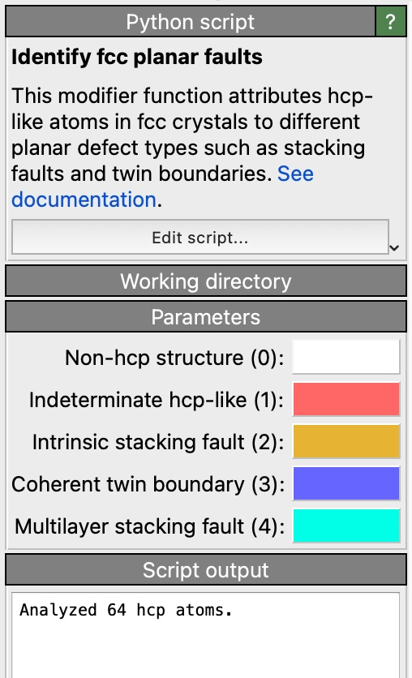
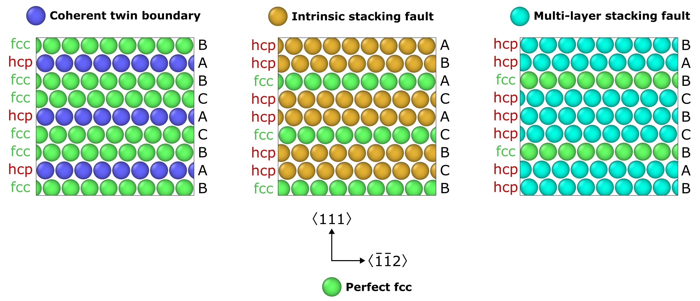
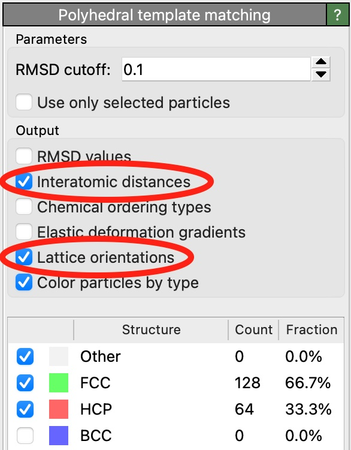

Identify fcc planar faults pro
{kind=link}
New in version 3.8.0.
This Python-based modifier identifies different planar defect types in face-centered cubic (fcc) crystals, e.g. stacking faults and coherent twin boundaries. These planar defects have in common that they are made of hcp-like atoms arranged on parallel {111} planes of the fcc crystal. The following pictures show the atomic stacking sequences that correspond to the different planar defect types recognized by the algorithm:
{kind=link}
The identification algorithm relies on intermediate results provided by the Polyhedral template matching modifier, which must be inserted into the data pipeline first to identify all hcp-like defect atoms in the fcc crystal. Make sure the PTM output options Interatomic distances and Lattice orientations are checked as the planar defect algorithm needs this information as input.
{kind=link}
The modifier subsequently analyzes the neighborhood of all hcp-like atoms to identify which kind of planar faults they are part of. Each atom in the input system is assigned to one of the following groups:
0 = Non-hcp atoms (e.g. perfect fcc or disordered)
1 = Indeterminate hcp-like (isolated hcp-like atoms, not forming a planar defect)
2 = Intrinsic stacking fault (two adjacent hcp-like layers)
3 = Coherent twin boundary (one hcp-like layer)
4 = Multi-layer stacking fault (three or more adjacent hcp-like layers)
The modifier writes the corresponding numeric values to the Planar Fault Type output particle property
and assigns corresponding colors to the hcp-like atoms to visualize their defect type.
Note
Keep in mind that multi-layered stacking faults may in fact be a combination of several intrinsic stacking faults and/or coherent twin boundaries which are located on adjacent {111} planes. The current algorithm cannot individually identify these defects when they are right next to each other.
PTM structure classification
Planar defect classification
Additionally, the modifier outputs a data table to report the total number of atoms in the system belonging to each planar fault type. Specifically for intrinsic stacking faults (ISFs) and coherent twin boundaries (TBs), the modifier also calculates the aggregated areas of these defects. They are calculated from the basal-plane projected area of each hcp-like atom that is part of these defects, divided by the number of atomic layers per planar defect (1 for TBs; 2 for ISFs).
Output data table of the Identify fcc planar faults modifier
The estimated areas in this table are given in units of length squared of the original simulation model.
See also
ovito.modifiers.IdentifyFCCPlanarFaultsModifier (Python API)